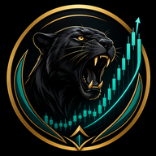

Live Signals
0Markets
Chart
Forex Academy
Master the fundamentals before you master the markets. Every successful trader started here.
What is Forex?
The world's largest financial market
What is Forex?
The world's largest financial market
Forex (FX) stands for foreign exchange — the global marketplace where national currencies are traded against one another. It is the largest and most liquid financial market in the world, with over $7.5 trillion traded daily.
Key facts:
- Open 24/5 — from Sydney open on Monday to New York close on Friday
- No central exchange — trades happen over-the-counter (OTC) through banks, brokers, and electronic networks
- Traded in pairs — you buy one currency while simultaneously selling another (e.g. EUR/USD)
- Leveraged — brokers let you control larger positions with a small deposit (amplifies both gains AND losses)
💡 Lesson: Because Forex is decentralized and leveraged, risk management is not optional — it is the #1 skill that separates surviving traders from those who blow their accounts.
Understanding Candlesticks
The language of price action
Understanding Candlesticks
The language of price action
A candlestick is a single visual bar that shows four prices for a given time period (1 min, 1 hour, 1 day, etc.):
(close > open)
(close < open)
- Body — the thick rectangle between open and close. Green/white = bullish (up). Red/black = bearish (down).
- Wicks (shadows) — thin lines showing the high and low extremes reached during the period.
- Long upper wick = sellers pushed price down from the high (potential rejection / resistance)
- Long lower wick = buyers pushed price up from the low (potential support / rejection)
Powerful candlestick patterns to learn:
- Hammer / Shooting Star — small body, long wick on one side → potential reversal
- Engulfing — a candle that fully "eats" the previous one → strong momentum shift
- Doji — open ≈ close (indecision between buyers and sellers)
- Pin bar — long tail with small body → rejection of a key level
Support & Resistance
The battle lines of the market
Support & Resistance
The battle lines of the market
Support is a price level where buyers have historically stepped in and pushed price UP (a "floor").
Resistance is a price level where sellers have historically stepped in and pushed price DOWN (a "ceiling").
These levels form because institutional traders remember price history and place orders at familiar zones. When a level breaks, it often flips: broken resistance becomes new support, and vice versa — this is called a role reversal.
How we detect them in this app:
- Swing highs / swing lows — local peaks and troughs confirmed by surrounding bars
- Zone clustering — multiple touches in the same price area make the level stronger
- Round numbers (e.g. 1.1000, 150.00) act as psychological levels
Trends & Market Structure
Higher highs, lower lows — the map of price
Trends & Market Structure
Higher highs, lower lows — the map of price
"The trend is your friend" — but you must be able to identify it.
Uptrend (bullish):
Price makes Higher Highs (HH) and Higher Lows (HL). Buyers are in control. We look for long (BUY) entries.
Downtrend (bearish):
Price makes Lower Highs (LH) and Lower Lows (LL). Sellers are in control. We look for short (SELL) entries.
Range / Sideways:
Price bounces between horizontal support and resistance with no clear direction. We either trade the range or wait for a breakout.
🏛️ Multi-timeframe principle: Always check the higher timeframe (D1 → H4) before entering on a lower timeframe. If D1 is in a strong uptrend, buying on H1 pullbacks has far better odds than selling.
Indicators Explained
RSI, MACD, EMA, ATR — what they actually mean
Indicators Explained
RSI, MACD, EMA, ATR — what they actually mean
EMA (Exponential Moving Average)
A smoothed line showing average price over N periods, weighted toward recent candles. When price is above the EMA → bullish bias. EMAs crossing each other signal momentum shifts. We use EMA 9 (fast), EMA 21 (slow), SMA 50 (trend), SMA 200 (long-term trend).
RSI (Relative Strength Index)
Oscillator from 0–100 measuring the speed of recent price changes.
- Above 70 = overbought (possible pullback)
- Below 30 = oversold (possible bounce)
- 50 level = momentum midpoint; crossing above 50 is bullish
MACD (Moving Average Convergence Divergence)
Two lines (MACD and Signal) plus a histogram. A crossover of MACD above its signal line is bullish; below is bearish. Divergence between MACD and price can warn of an upcoming reversal.
ATR (Average True Range)
Measures volatility — how much price typically moves in a bar. We use ATR to set stop-losses and position sizes, so you don't get stopped out by random noise, and so you size your trades consistently.
⚠️ Never trade indicators alone. Indicators are derived from price — they don't predict the future. The best signals combine indicators with price action (structure, candlestick patterns, support/resistance, and trend).
Risk Management
The only rule that keeps you in the game
Risk Management
The only rule that keeps you in the game
You can have the best strategy in the world and still blow up without risk management. This is not optional.
Golden rules:
- Never risk more than 1-2% of your account on a single trade.
- Always use a stop-loss. Before you enter, know exactly where you're wrong.
- Always know your risk:reward (R:R) before entering. Only take trades with at least 1:1.5.
- Never move your stop further away when a trade goes against you — that is how accounts die.
- Don't overtrade. Not every day has a setup. No-trade is a valid position.
- Don't revenge-trade after a loss. The market doesn't owe you anything.
🎯 A trader with a 50% win rate and consistent 1:2 risk-reward is profitable. A trader with a 70% win rate risking 3× their target is broke.
Trading Psychology
The market is a mirror of your emotions
Trading Psychology
The market is a mirror of your emotions
Trading is 20% strategy and 80% psychology.
Common emotional traps:
- FOMO (Fear Of Missing Out) — jumping into trades late because you don't want to miss a move
- Revenge trading — over-sizing after a loss to "make it back"
- Overconfidence after a winning streak (leads to sloppy trades)
- Analysis paralysis — adding more indicators instead of taking the trade
- Hope — turning a losing trade into an "investment" instead of cutting losses
Disciplines that help:
- Keep a trading journal — review every trade, win or lose
- Trade the plan, plan the trade — no impulsive entries
- Treat trading like a business, not a casino
- Accept that losses are part of the business, like inventory for a store
Trading Sessions
When the market moves (and why)
Trading Sessions
When the market moves (and why)
Forex runs 24 hours, but volatility comes in sessions:
- 🕘 Sydney / Tokyo (Asian session) — lower volatility, range-bound
- 🕘 London (European session) — high volume, major moves start here
- 🕘 New York (US session) — highest volatility; overlaps with London for a few hours ("London-New York kill zone" is the most liquid time to trade)
For our pairs (EUR/USD, GBP/USD, etc.) the sweet spot is during the London session and London/NY overlap.
Pips, Lots & Position Size
The units you trade in
Pips, Lots & Position Size
The units you trade in
A pip is the smallest standard price move. For most pairs it's 0.0001 (e.g. EUR/USD moving from 1.0850 → 1.0851 = 1 pip). For JPY pairs it's 0.01.
A lot is the standard trade size:
- Standard lot = 100,000 units (~$10/pip on EUR/USD)
- Mini lot = 10,000 units (~$1/pip)
- Micro lot = 1,000 units (~$0.10/pip)
💰 Calculate lot size from your stop distance and risk %: Lot = Account Risk ÷ (Pips at Risk × Pip Value). This app calculates this automatically for each signal.
Trade Journal
Closed Trades
Settings & Info
Trading Forex with Ndumiso
Strategy v1.0.0
Last Update
—
Data Source
Twelve Data (primary) · Yahoo (fallback)
Important Disclaimer
This application provides technical analysis and educational content for informational purposes only. It is not financial advice. Forex trading carries substantial risk of loss. Never trade money you cannot afford to lose. Past performance is not indicative of future results. Signal strength scores represent confluence of technical factors only, not probability of winning.